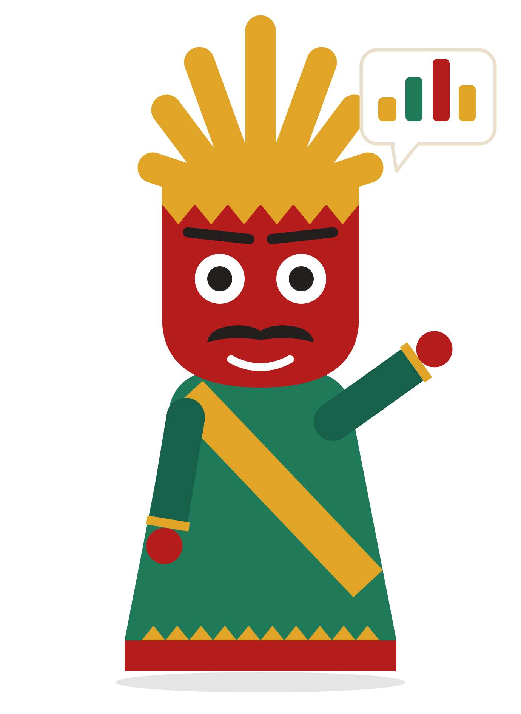

Total anggaran belanja
Pagu belanja
Rp 84,30 T
Pajak daerah dan belanja APBD Jakarta, dijelaskan dengan sederhana.
Terinspirasi dari ondel-ondel penjaga Betawi. Tugasku sederhana: menemanimu membaca data anggaran dan pajak Jakarta tanpa rasa rumit apalagi takut. Angka asli, sumber resmi Satu Data Jakarta.
* Ondi bukan pejabat publik, dan paJAK-Kita adalah inisiatif civic-tech independen.
Klik wilayah pada peta atau pilih tombol wilayah untuk menelusuri kontribusi pajak daerah, realisasi belanja SKPD wilayah, serta program prioritas di masing-masing kota dan kabupaten administrasi.
Pusat Kawasan Bisnis Terpadu, Hunian Hijau & Kontributor PBB-P2 Tertinggi
Menelusuri distribusi penyerapan anggaran belanja untuk pembangunan fasilitas, operasional dinas, dan layanan warga.
Datamu, kotamu, ceritamu
Temukan cerita di balik data pajak Jakarta, lalu buat kartu insight yang siap kamu bagikan.
Buat Kartu InsightKoleksi visualisasi data APBD hasil eksplorasi warga Jakarta. Setiap kartu mencerminkan perspektif riil dari saku ke kota.
GLOSARIUM & RUJUKAN
Istilah perpajakan dan keuangan daerah Jakarta dengan rujukan definisi resmi.
Kontribusi wajib kepada daerah yang terutang oleh orang pribadi atau badan yang bersifat memaksa berdasarkan Undang-Undang tanpa imbalan langsung.
Pendapatan yang diperoleh daerah dari pajak daerah, retribusi daerah, hasil pengelolaan kekayaan daerah yang dipisahkan, dan lain-lain PAD yang sah. Menjadi jembatan utama penerimaan sebelum dialokasikan.
Pajak atas kepemilikan, penguasaan, dan bea balik nama penyerahan hak milik kendaraan bermotor. Kontributor penerimaan harian terbesar dari warga.
Pajak atas bumi dan/atau bangunan yang dimiliki, dikuasai, dan/atau dimanfaatkan oleh orang pribadi atau badan di wilayah perkotaan dan perdesaan.
Bea Perolehan Hak atas Tanah dan Bangunan, yaitu pajak yang dikenakan atas perolehan hak atas tanah dan/atau bangunan oleh pembeli atau penerima hak.
Pajak atas konsumsi makanan/minuman, tenaga listrik, perhotelan, parkir, dan kesenian/hiburan. Menggabungkan dan menggantikan istilah lama pajak hotel, restoran, hiburan, dan parkir.
Rencana keuangan tahunan pemerintah daerah yang dibahas dan disetujui bersama DPRD. Muara akhir tempat seluruh dana pajak dialokasikan menjadi fasilitas dan belanja kota.
Pahami 158 singkatan, regulasi, dan definisi resmi tata kelola keuangan DKI Jakarta.
paJAK-Kita dirancang agar warga dapat menguji langsung asal-usul data, rumus kalkulasi, dan batas keterbacaan informasi publik tanpa ada yang ditutupi.

"Data resmi APBD DKI Jakarta 2026. Dihitung matematis tanpa manipulasi."
Dataset diambil dari BPKD Provinsi DKI Jakarta dan portal Satu Data Jakarta dengan validasi integritas berkala.
Menyajikan data historis riil serta proyeksi tahun berjalan per posisi data resmi.
Persentase capaian dan rasio penyerapan dihitung menggunakan formula akuntansi publik standar tanpa rekayasa kurva.
Jika akun belanja belum dialokasikan atau dalam proses penetapan, sistem menampilkannya apa adanya secara transparan.